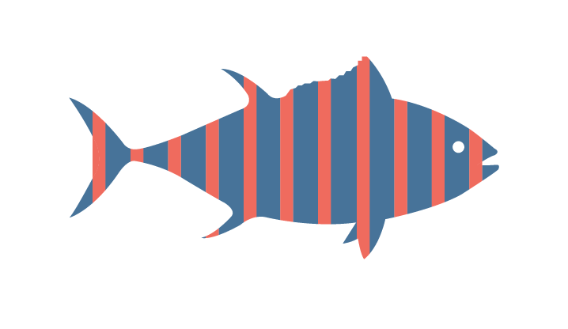

<body>

<h1> pick a fish any fish </h1>

<div id="container"> 

	<div class ="line"> </div>

	<h3> NOMINAL CATCHES FROM 2006-2013 </h3>

	<div class ="line"> </div>


</div>


<div id="rectangle">





</div>


<!-- <div id="openModal" class="modalDialog">
	
</div> -->


<div id="openModal" class="modalDialog">
	<div>
		<a href="#close" title="Close" class="close">X</a>
		<h2>COD</h2>
		<svg width="400px" height="400px"> </svg>


	<div id="year_slider">
		<!--the name of the slider-->
		<label id="yearLabel" for="fader"></label>
		<br>
		<!--the output based on where the slider is-->
		<output for="fader" id="year">2013</output>	
		<br>
		<!--input, the button of the slider-->
		<input type="range" min="2006" max="2013" value="2013" id="inputYear" step="1" oninput="outputUpdate(value)" width="300px">

<!-- 		<datalist id="yearscale">
		<option>0</option>
		<option>1</option>
		<option>2</option>
		<option>3</option>
		<option>4</option>
		<option>5</option>
		<option>6</option>
		<option>7</option>
		<option>8</option>
		<option>9</option>
		<option>10</option>
	</datalist> -->
		
	</div>


	</div>
</div>


</body>

<style>
	#controls {
		background-color: white;
		position: absolute;
		top:0;
		bottom:0;
		width:200px;
	}
	svg {
		background-color: white;
		margin-left: 200px;
	}

</style>

<!-- 
<div id="controls"> 
	<select id="year_dropdown"></select>	
 -->
</div>

<!-- <svg width =500 height=500></svg> -->


<script>


function outputUpdate(year) {
		document.querySelector('#year').value = year;
		currentYear = year;
		drawPie();
	}


var raw_data = [], 
	species = []
	nestedfish = [];
var currentYear = 2013;

function drawPie() {

		var pie = d3.layout.pie()
		.value(function(d){
			return d.values[currentYear];
		});

		// change the .innerRadius to make a donut 


		data = pie(fishdata);

		var arc = d3.svg.arc()
			.innerRadius(120)
			.outerRadius(200);

		var slices = d3.select("svg").selectAll("path")
			.data(data);

			// this is moving it to make them start in center 

		slices.enter().append("path")
			.attr("transform", "translate(200,200)")
			.style("fill", function(d){
				return d.data.color;
			})
			.attr("d", arc);

}


	d3.selectAll(".fish").on("click", function(){
		console.log(this.id)
		d3.select("#openModal").select("h2").text(this.id);

		var fish = this.id;

		var fishdata = nestedfish
			.filter(function(d){
				return d.key==fish;
			})[0].values;

			console.log(fishdata);

					d3.select("#openModal").classed("open", true);


		var pie = d3.layout.pie()
		.value(function(d){
			return d.values[currentYear];
		});

		// change the .innerRadius to make a donut 


		data = pie(fishdata);

		var arc = d3.svg.arc()
			.innerRadius(120)
			.outerRadius(200);

		var slices = d3.select("svg").selectAll("path")
			.data(data);

			// this is moving it to make them start in center 

		slices.enter().append("path")
			.attr("transform", "translate(200,200)")
			.style("fill", function(d){
				return d.data.color;
			})
			.attr("d", arc);


// this is where I can filter stuff 

// key - name
// value - data array


});

	var specific_data = species.filter(function(d){
		return d.species == "ABK";


});

		d3.selectAll(".close").on("click", function(){
	

		d3.select("#openModal").classed("open", false);

});

d3.csv("data/fish/catchdata.csv", function(error, data){

	raw_data = data


	console.log(raw_data);


	nestedfish = d3.nest()
			.key(function(d){
				return d.species;
			})
			.key(function(d){
				return d.country;
			})

			.rollup(function(leaves){
				var yeardata = {};
				d3.range(2006,2014).forEach(function(year){
					yeardata[year]=d3.sum(leaves, function(d){
						return d["year"+year]
					})
				})
				return yeardata;
			})
			.entries(raw_data);


	nestedfish = nestedfish.sort( function(a,b){
		return b.values.length - a.values.length;
	}).slice(0,30);


	console.log(nestedfish);


});


</script>